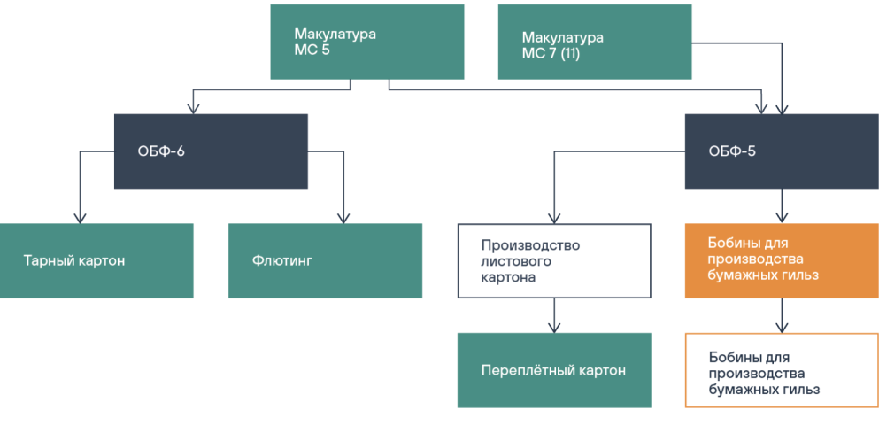

Новый участок линии производства на ПЗБМ
H2 Пример заголовка в две строчки
H3 Пример заголовка в две строчки, чтобы было видно межстрочник
«Объединенные бумажные фабрики» были признаны победителем в номинации «Успешная маркетинговая стратегия. Расширение рынков в России и вовне». Жюри отметило вывод на российский рынок макулатурного тарного картона высшей марки качества — Liner HP и Medium HP, внедрение новых ТУ, стратегию продвижения в сегменте b2b, в основе которой лежит обоснование экономической эффективности использования высокотехнологичного сырья для гофроупаковки.
H4 Пример заголовка в две строчки, чтобы было видно межстрочник
Поблагодарив организаторов форума и премии за награду — ее вручение проходило в онлайн-формате, — генеральный директор ОБФ Дмитрий Дулькин отметил, что успехи этого года стали итогом многолетней работы по совершенствованию физико-механических показателей и потребительских свойств продукции. Новое качество позволило ОБФ впервые выйти на международный рынок. По словам Дмитрия Александровича, доля экспорта в общем объеме реализации и значение этого направления для компании будут только возрастать.
H5 Пример заголовка в две строчки, чтобы было видно межстрочник
Поблагодарив организаторов форума и премии за награду — ее вручение проходило в онлайн-формате, — генеральный директор ОБФ Дмитрий Дулькин отметил, что успехи этого года стали итогом многолетней работы по совершенствованию физико-механических показателей и потребительских свойств продукции. Новое качество позволило ОБФ впервые выйти на международный рынок. По словам Дмитрия Александровича, доля экспорта в общем объеме реализации и значение этого направления для компании будут только возрастать.
Также организаторы премии оценили высокий уровень и разнообразие дизайнерских решений продукции Полотняно-Заводской бумажной мануфактуры. Производитель популярных на рынке тетрадей и скетчбуков боролся за победу в номинации «Разнообразие в линейке выпускаемой продукции». И хотя стать победителем в этот раз не удалось, впечатленные эксперты, входившие в жюри, предложили в следующем году учредить отдельную номинацию для оценки «экстерьера» бумажных изделий, предназначенных для розничного потребителя.
Список
Заголовком списка может служить P1 жирный
- Однострочный пункт списка
- Двухстрочный пункт списка. В соответствии с технологией подготовки макулатурной массы в состав цеха входят: участок роспуска макулатуры (УРМ), размольно-подготовительный отдел
- Последний пункт списка имеет увеличенный отступ снизу. Двухстрочный пункт списка. В соответствии с технологией подготовки макулатурной массы в состав цеха входят: участок роспуска макулатуры (УРМ), размольно-подготовительный отдел
Табличка
Заголовком списка может служить P1 жирный
| Заголовок столбца | Заголовок столбца |
|---|---|
| Год последней модернизации | 2013 год |
| Рабочая скорость | 245 м/мин. |
| Обрезная ширина | 2100 мм |
Поблагодарив организаторов форума и премии за награду — ее вручение проходило в онлайн-формате, — генеральный директор ОБФ Дмитрий Дулькин отметил, что успехи этого года стали итогом многолетней работы по совершенствованию физико-механических показателей и потребительских свойств продукции. Новое качество позволило ОБФ впервые выйти на международный рынок. По словам Дмитрия Александровича, доля экспорта в общем объеме реализации и значение этого направления для компании будут только возрастать.
